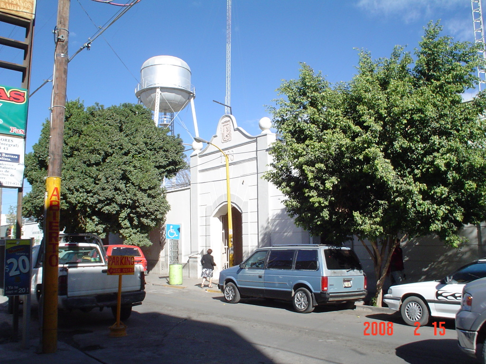
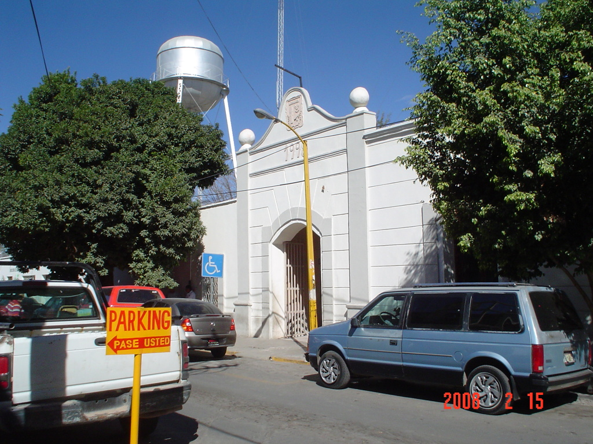

Renovar la licencia de automovilista en Lerdo, Durango
Decidí documentar minuciosamente todo el proceso de renovación de la licencia de automovilista. Lo que a continuación expongo es un ejemplo de la desconsideración que tienen algunas autoridades con el tiempo y recursos de nosotros los ciudadanos.
El mes pasado dediqué una mañana a cumplir con las obligaciones ciudadanas de pagar predial, tenencia y refrendos. Aproveché la vuelta para que mi esposa renovara su licencia de manejo, sin saber la cantidad de trámites y traslados que debía hacer.
En este mes llegó mi turno, tenía que renovar mi licencia de manejo y pasar por los mismos trámites que había tenido mi esposa. Decidí documentar minuciosamente todo el proceso. Lo que a continuación expongo es un ejemplo de la desconsideración que tienen algunas autoridades con el tiempo y recursos de nosotros los ciudadanos.
Bitácora

10:14 a.m.
Llego a la Dirección de Tránsito. Me atiende un oficial que me entrega un volante con los requerimientos (certificado médico, examen vial, copias de comprobante de domicilio, credencial de elector, licencia anterior), me explica también debo sacar una copia a la solicitud, eso no lo dice el volante. Además me indica que debo de ir a la Dirección de Salud Pública Municipal a que me hagan un Certificado Médico.
10:32 a.m.
Saqué las copias fotostáticas en un local de enfrente. Costo de las copias $5.

10:40 a.m.
Llegué a la Dirección de Salud Pública Municipal. Pago $50 por el certificado y un médico me pasa al consultorio. Me pregunta si padezco de alguna enfermedad como hipertensión y si sé mi tipo de sangre. Llena a mano el Certificado Médico y me lo entrega. No hubo ningún procedimiento médico, sólo preguntas. Costo del certificado $50.

10:59 a.m.
Llego por segunda vez a la Dirección de Tránsito. Paso a una ventanilla a solicitar mi recibo de comprobante del Examen Vial. Me dicen que vaya a pagar a la caja que está bajo la torre.
11:10 a.m.
Pago el examen vial en la caja situada en la segunda puerta bajo la Torre del Reloj. Costo del Examen Vial $50.
11:14 a.m.
Por tercera vez, entro a la Dirección de Tránsito. El oficial me firma como aprobado el Examen Vial. Por supuesto, tampoco hubo un examen, ni teórico, ni práctico. Me dice que ya puedo ir a Recaudación de Rentas por mi licencia.
11:23 a.m.
Llegué a Recaudación de Rentas. Voy con la encargada de las licencias, quien me dice que primero vaya a la caja a pagar. En la caja me preguntan si deseo cooperar con la Cruz Roja, lo cual acepto. Fueron $450 pesos en total. Es impresionante el equipo para el registro e impresión de las licencias. Consta de una computadora, impresora de licencias, cámara digital, lector de huellas y lector de firmas digitales; además un modem Infinitum para enviar los datos, seguramente a algún servidor del gobierno estatal.
11:43 a.m.
En este momento debería ya tener mi licencia. Pero para mi desfortuna, la impresión salió defectusa, así como la segunda y la tercera.

12:22 p.m.
Después de varios ajustes en el equipo de impresión, por parte del técnico, la cuarta impresión fue satisfactoria. Por fin, ya tengo mi nueva licencia.
Resumen en cifras
- En tiempo: 2 horas 29 minutos.
- En traslados: 4.6 Kilómetros recorridos.
- En dinero: Copias $5 + Certificado médico $50 + Examen vial $50 + Licencia $450 = $555.
Preguntas.
Podríamos debatir en muchos aspectos del trámite. A mi se me ocurre:
- ¿Por qué se cobran por certificados y exámenes que no se aplican como debieran?.
- Tal vez sea mucho pedir por un médico en la Dirección de Tránsito, eso nos ahorarría dos traslados por un simple papel.
- En Recaudación de Rentas, con el equipo de punta con el que cuentan, ¿por qué no ponen un cartel o volante informativo de este trámite?, me tocó ver a varias personas a las que se les explicaba el trámite y que se asustaban al saber el costo.
Me siento orgulloso de ser ciudadano lerdense, pero no por ser ciudad pequeña acepto un trámite engorroso, lento y costoso.